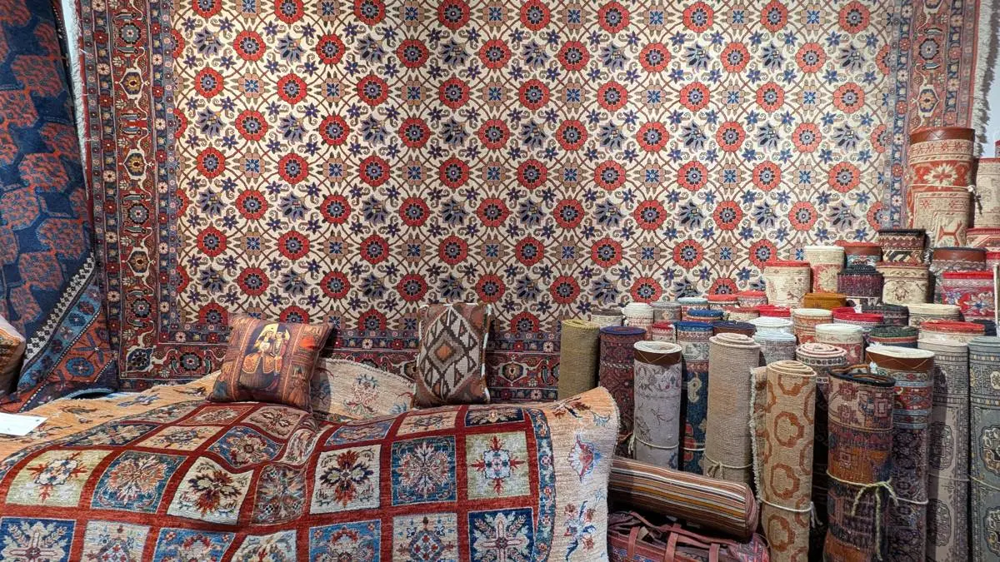

Tappeti persiani
Pezzi tradizionali e contemporanei.
Vendita, lavaggio e restauro dal 1991
Vendita, lavaggio e restauro per tappeti persiani e orientali.

Servizi
Una selezione curata di tappeti persiani e orientali scelti per qualita', stile e personalita'.
Lavaggi ad acqua per rigenerare e preservare i tappeti.
Oggetti raffinati da regalare e regalarsi, scelti con gusto tra tradizione e decorazione.
Selezione
Tappeti e oggetti scelti con gusto, per la casa o per un regalo speciale.
Pezzi tradizionali e contemporanei.

Per conservare valore e bellezza nel tempo.

Decorazioni raffinate per la casa o per un regalo.

Elementi decorativi scelti con cura in bottega.
Chi siamo
Shahmansouri Tappeti Persiani porta a Verona il fascino senza tempo dei tappeti persiani, frutto di un'arte tramandata da generazioni. Materiali selezionati e maestria artigianale danno vita a pezzi unici, pensati per durare e raccontare una storia.
La collezione unisce tappeti antichi di valore storico, creazioni contemporanee dal design raffinato e classici della tradizione persiana. Ogni dettaglio, dal nodo alla trama, contribuisce a trasformare la casa in uno spazio di armonia, calore ed eleganza.
Domande frequenti
Il costo dipende da dimensioni, materiali, stato di sporco e tipologia di lavorazione richiesta. In negozio possiamo indicare il trattamento piu' corretto e un preventivo.
Conviene intervenire quando ci sono bordi che cedono, frange consumate, piccoli buchi o aree fragili. Un intervento tempestivo evita danni piu' estesi.
Si', per Verona e aree limitrofe possiamo valutare ritiro e riconsegna, soprattutto per tappeti di grandi dimensioni o delicati.
Contatti
Ti aiutiamo a scegliere il trattamento giusto o il pezzo adatto alla tua casa.
| Mattina | Pomeriggio |
|---|---|
| - | - |